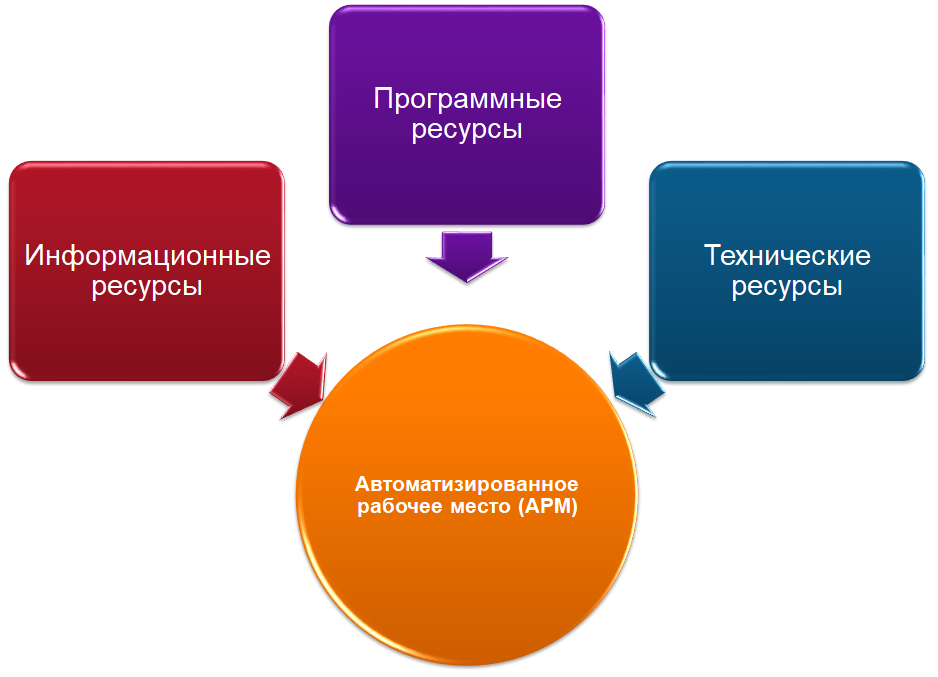

Тема 1.1. Автоматизированное рабочее место

Автоматизированное рабочее место (АРМ) — совокупность аппаратных и программных средств, предназначенных для выполнения определенных профессиональных задач в автоматическом или полуавтоматическом режиме. В широком понимании АРМ включает в себя компьютер, программное обеспечение, периферийные устройства и сети связи, обеспечение взаимодействия пользователя с информационной системой.
Первые
технологические рабочие места появились в 1960-х годах и были созданы для
автоматизации производственных процессов. В 1980-х годах появление персональных
компьютеров открыло новые возможности для автоматизации в офисах и
образовательных учреждениях.
Сам термин «автоматизированное рабочее место» (АРМ), в зарубежной терминологии, «рабочая станция» (work-station), появился в 1970-х годах с развитием вычислительной техники, обеспечивавшей автоматизированную обработку символьной информации. Первоначально он рассматривался как инструмент для создания автоматизированных систем проектирования и был одним из направлений разработки программных интегрированных комплексов.
Основное
назначение АРМ
– автоматизированное представление информации на ПЭВМ в удобной для пользователя
форме, формирование и ведение локальной информационной базы предметной области,
предоставление различных сервисных услуг пользователю.
В
состав АРМ входят 4 составляющих:
•
аппаратная
•
программная
• информационная (базы данных, банки данных)
организационная (права и обязанности пользователя АРМ, должностные инструкции)
